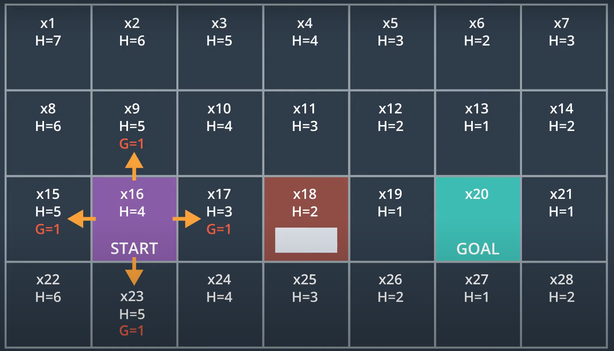
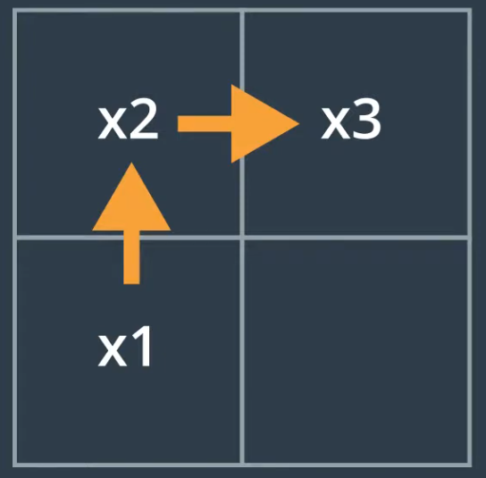

A heuristic function has to obey the triangle inequality theorem, which states that for any three points, x1, x2, and x3, the heuristic estimate for x1 to x3 has to be less than the heuristic estimate from x1 to x2 plus the heuristic estimate from x2 to x3. $$ H[x_1, x_3] \leq H[x_1, x_2] + H[x_2, x_3] $$
This is dependent on the quality of the heuristic - the better the heuristic, the better the A-star implementation will perform.